材料 5個分
※粉量を変えると自動計算されます
生地
トッピング
茹でる用(ケトリング)
作り方
生地
STEP 1
ホームベーカリーで生地を作る
ホームベーカリーに材料をセットして「生地コース」を選べば、生地作りから一次発酵までお任せできます。コースが終わったら、生地の状態を確認して次の作業に進みます。
ホームベーカリーに材料をセットして「生地コース」を選べば、生地作りから一次発酵までお任せできます。コースが終わったら、生地の状態を確認して次の作業に進みます。
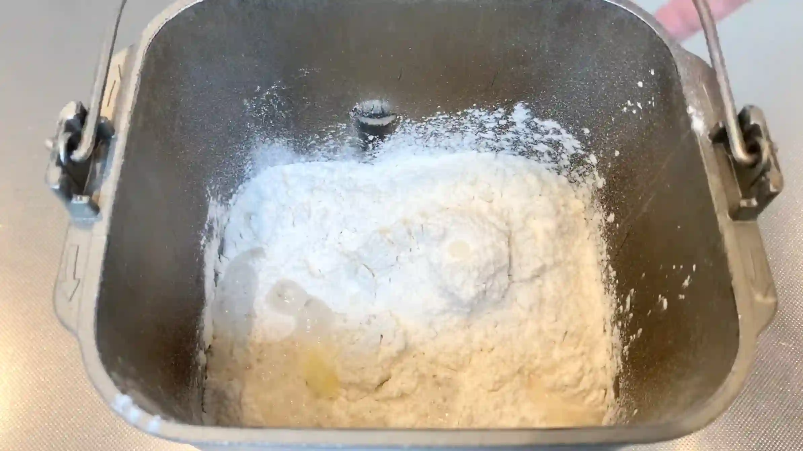
STEP 2
生地を取り出して5分割する
生地をできるだけ均等に分けることで、それぞれの大きさや焼き上がりをそろえやすくなります。
生地をできるだけ均等に分けることで、それぞれの大きさや焼き上がりをそろえやすくなります。
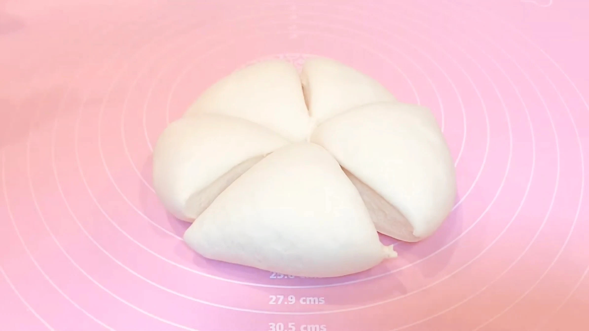
STEP 3
生地を丸め、ラップをして常温で15分おく
ここで生地を休ませることで、一次発酵後の生地が落ち着き、この後の成形がしやすくなります。生地が少しゆるんで伸ばしやすくなっていれば、次の工程へ進みます。
ここで生地を休ませることで、一次発酵後の生地が落ち着き、この後の成形がしやすくなります。生地が少しゆるんで伸ばしやすくなっていれば、次の工程へ進みます。
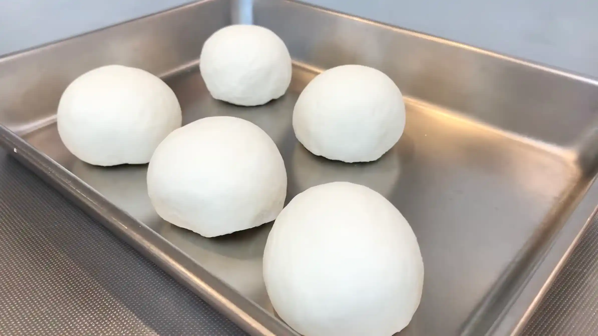
STEP 4
めん棒を使い、生地を15㎝の楕円に伸ばす（[動画 03:24]）
丸めた生地のとじ目を上にして置き、めん棒で15㎝ほどの楕円に伸ばします。とじ目のないきれいな面を下にして伸ばしておくと、成形したときに表面がきれいに仕上がります。
丸めた生地のとじ目を上にして置き、めん棒で15㎝ほどの楕円に伸ばします。とじ目のないきれいな面を下にして伸ばしておくと、成形したときに表面がきれいに仕上がります。
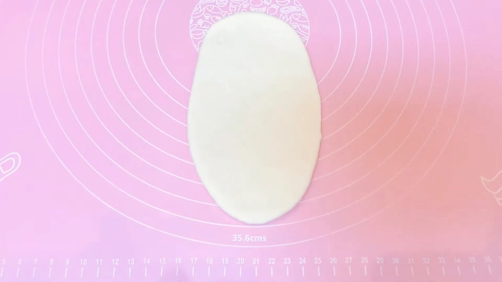
STEP 5
生地を張らすように、上から巻く（[動画 03:35]）
生地を上から巻くときは、ふんわり巻くのではなく、表面を軽く張らせるように巻いていきます。こうすることで、焼き上がったときに生地がだれにくく、きれいな棒状に仕上がります。
生地を上から巻くときは、ふんわり巻くのではなく、表面を軽く張らせるように巻いていきます。こうすることで、焼き上がったときに生地がだれにくく、きれいな棒状に仕上がります。
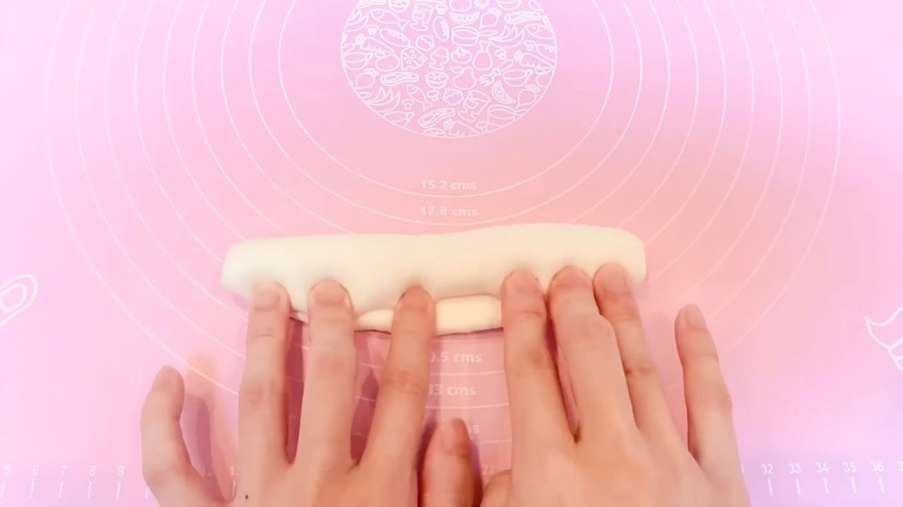
STEP 6
生地のとじ目を閉じる（[動画 03:55]）
巻き終わりは指でしっかり閉じておきます。ここが開いていると、茹でるときや焼いている間に生地がほどけてしまうことがあるため、とじ目をつまむようにしてしっかり閉じます。
巻き終わりは指でしっかり閉じておきます。ここが開いていると、茹でるときや焼いている間に生地がほどけてしまうことがあるため、とじ目をつまむようにしてしっかり閉じます。
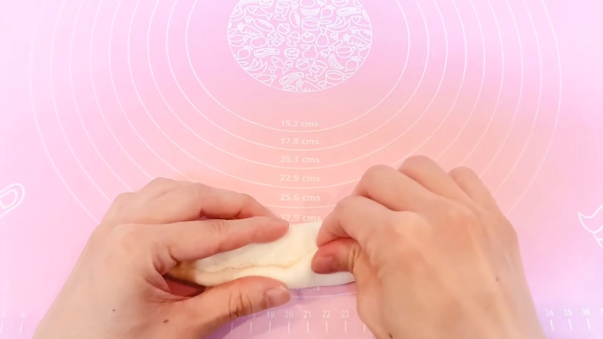
STEP 7
生地を23㎝に伸ばす（[動画 04:12]）
両手で少しずつ転がすように伸ばし、23㎝ほどの長さに整えます。生地を急に引っ張ると表面が割れることがあるため、力を入れすぎず、生地の様子を見ながらゆっくり伸ばしていきます。
両手で少しずつ転がすように伸ばし、23㎝ほどの長さに整えます。生地を急に引っ張ると表面が割れることがあるため、力を入れすぎず、生地の様子を見ながらゆっくり伸ばしていきます。
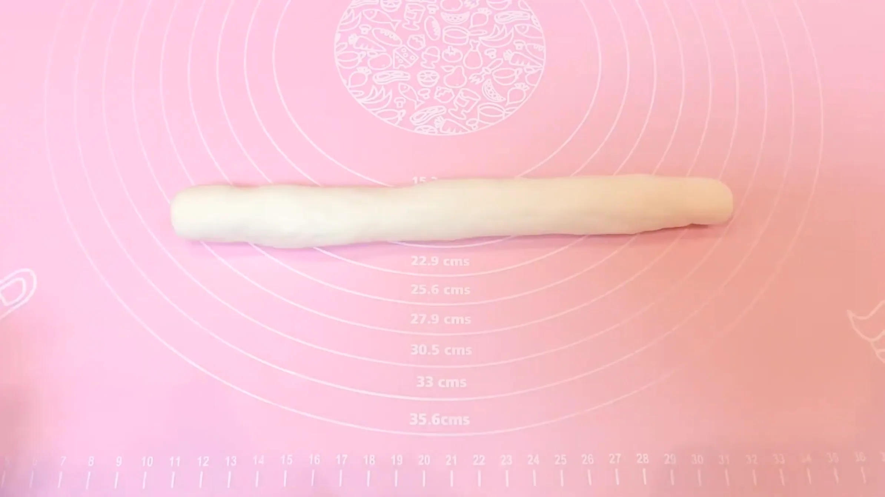
STEP 8
生地の端にめん棒で耳を作る（[動画 04:20]）
生地の端を平らに伸ばして「耳」を作ります。この部分は大きく伸ばしておくと、生地を閉じやすくなります。
生地の端を平らに伸ばして「耳」を作ります。この部分は大きく伸ばしておくと、生地を閉じやすくなります。
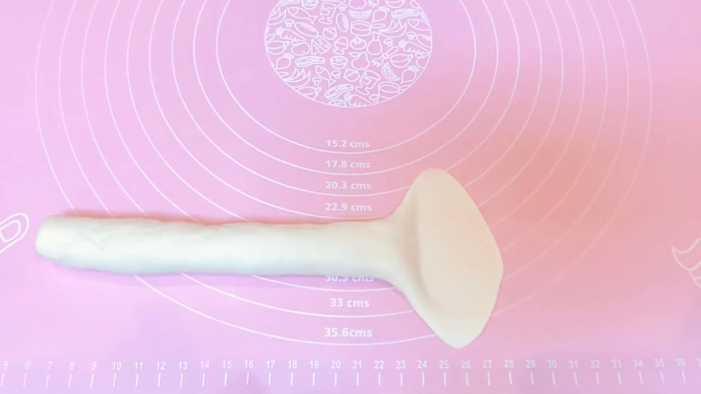
STEP 9
丸く輪っかにして耳で閉じる（[動画 04:42]）
生地を輪っかにしたら、耳の部分を反対側の生地にしっかり重ねて閉じます。つなぎ目が開いていると茹でるときに形が崩れやすいため、しっかり閉じるのがポイントです。
生地を輪っかにしたら、耳の部分を反対側の生地にしっかり重ねて閉じます。つなぎ目が開いていると茹でるときに形が崩れやすいため、しっかり閉じるのがポイントです。
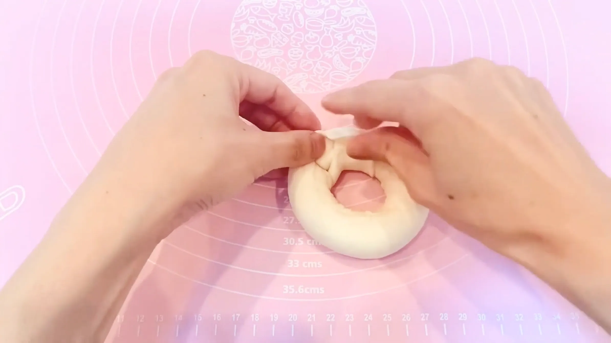
STEP 10
オーブンシートにのせ、ラップをして常温で30分おく
成形した生地をオーブンシートにのせたまま発酵させます。ベーグルは発酵させすぎると焼き上がりの形が崩れやすくなるため、30分を目安に、生地がひと回りふっくらしたところで次の工程に進みます。
成形した生地をオーブンシートにのせたまま発酵させます。ベーグルは発酵させすぎると焼き上がりの形が崩れやすくなるため、30分を目安に、生地がひと回りふっくらしたところで次の工程に進みます。
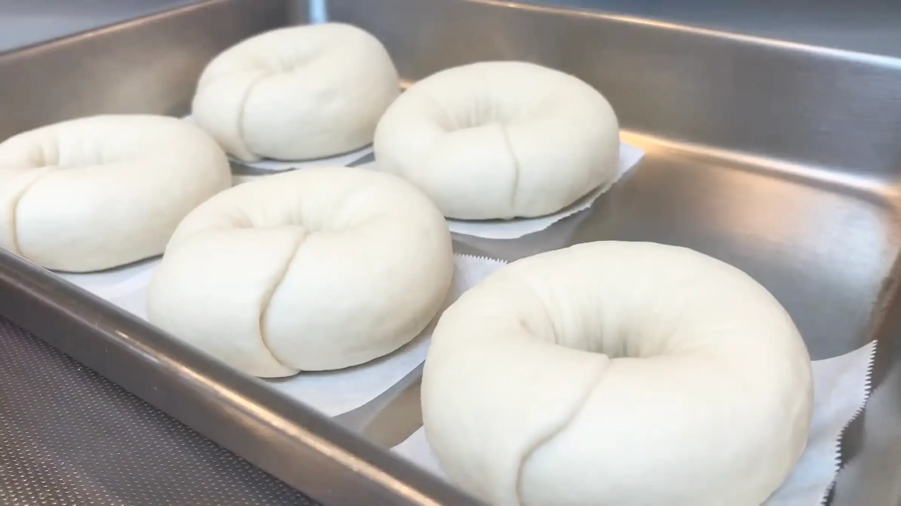
STEP 11
オーブンを210℃で予熱する
この後のケトリングから焼成までをスムーズに進められるよう、このタイミングでオーブンをしっかり予熱しておきます。ケトリングした生地を長く置かず、準備ができたらそのまま焼けるようにしておきます。
この後のケトリングから焼成までをスムーズに進められるよう、このタイミングでオーブンをしっかり予熱しておきます。ケトリングした生地を長く置かず、準備ができたらそのまま焼けるようにしておきます。
STEP 12
お湯（90℃くらい）にはちみつを入れる
ベーグルを焼く前にお湯でゆでる「ケトリング」を行います。はちみつの糖分が生地の表面に作用することで、焼き上がりの香ばしさやほんのりとした甘みにつながります。とはいえ、私自身は、はちみつを入れたときの効果は「気持ちの問題かな？」と思うこともあるので、はちみつがなければ無理に加える必要はありません。
ベーグルを焼く前にお湯でゆでる「ケトリング」を行います。はちみつの糖分が生地の表面に作用することで、焼き上がりの香ばしさやほんのりとした甘みにつながります。とはいえ、私自身は、はちみつを入れたときの効果は「気持ちの問題かな？」と思うこともあるので、はちみつがなければ無理に加える必要はありません。
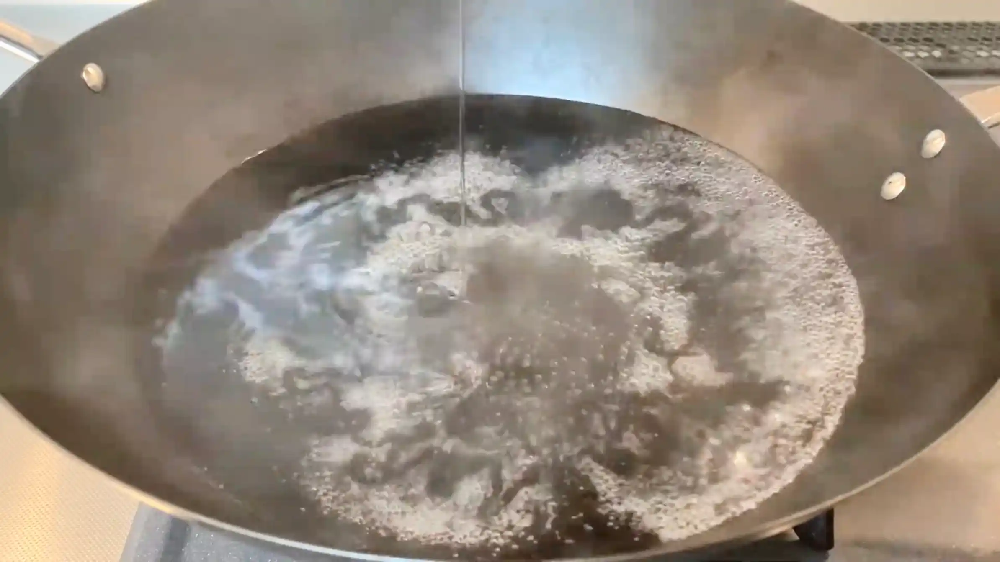
STEP 13
生地を片面30秒ずつ茹でる
片面30秒ずつを目安に手早く茹で、茹で上がったらすぐに天板へ移します。
片面30秒ずつを目安に手早く茹で、茹で上がったらすぐに天板へ移します。
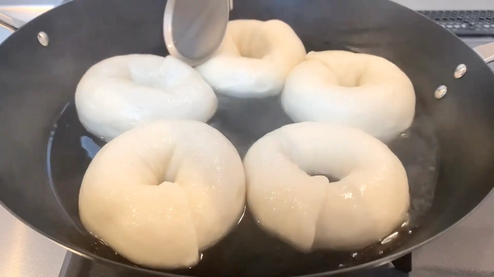
STEP 14
天板に生地をのせてチーズをトッピングする
茹でた生地は表面が乾きやすくなるため、手早く天板に移してチーズをのせます。チーズは焼いている間に溶けて香ばしく焼き色がつくので、お好みの量を全体にバランスよくのせます。
茹でた生地は表面が乾きやすくなるため、手早く天板に移してチーズをのせます。チーズは焼いている間に溶けて香ばしく焼き色がつくので、お好みの量を全体にバランスよくのせます。
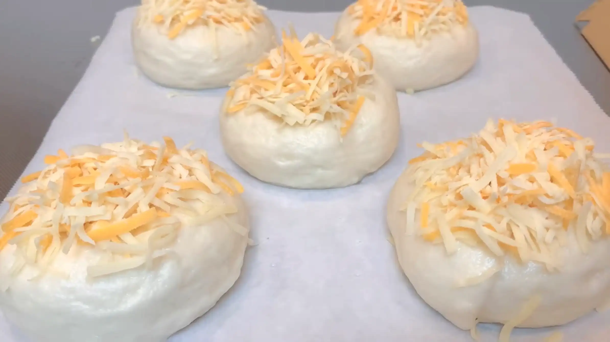
STEP 15
オーブン210℃で20分焼く
表面のチーズがこんがりと色づき、生地の中にしっかりと火が通るまで焼きます。米粉を配合した生地なので、小麦だけのベーグルに比べて焼き色はやや淡めに仕上がります。焼き時間は20分を目安に、ご家庭のオーブンに合わせて調整してください。
表面のチーズがこんがりと色づき、生地の中にしっかりと火が通るまで焼きます。米粉を配合した生地なので、小麦だけのベーグルに比べて焼き色はやや淡めに仕上がります。焼き時間は20分を目安に、ご家庭のオーブンに合わせて調整してください。
動画でチェック
おいしく作るためのワンポイントコラム
最近ではスーパーでも手に入りやすくなった米粉ですが、「パン作りにはどんな米粉を選べばいいの？」と迷ってしまいますよね。今回は、普段のお料理にも使える『うるち米100%の米粉』を使い、お米の優しい甘みともちもち食感がたまらない『米粉のチーズベーグル』を作ります！独特の食感と豊かな風味を引き出すための「2つのコツ」をまとめました。
① 失敗を防ぐ配合のコツ
米粉には、原材料がうるち米100%のものと、製菓用や製パン用にあらかじめ グルテンなどが添加されているものがあります。今回はうるち米100%の米粉を使用するのですが、これでふっくらした食感のパンを焼くのは至難の業。グルテンが添加されていない米粉を使う場合は米粉2：強力粉8の黄金比率で配合するのがおすすめです。強力粉でグルテンの骨組みをしっかり残しつつ、米粉特有のさっぱりとした風味ときめ細かく抜群にモチモチした食感を失敗なく引き出すことができます。
② 成形のコツ
ベーグル特有の綺麗な形に仕上げるためには、生地の伸ばし方と閉じ方が大切。めん棒で生地を23cmの長さに細長く伸ばし、片方の端（耳の部分）を大きめにしっかりとペタンと潰すのがコツです。この潰した部分で反対側の端を包み込むようにして、生地のつなぎ目をきゅっと閉じると、発酵や茹でる工程でも外れにくく美しいリング状に整います。
おうちで米粉の使い道に困った時にも、とってもおすすめのレシピです！オーブンから漂う香ばしいチーズの香りと、噛むほどに広がるお米の甘みはまさに最高。強力粉だけとはひと味違う美味しさを持つ米粉ベーグル、ぜひおうちで味わってみてください。
① 失敗を防ぐ配合のコツ
米粉には、原材料がうるち米100%のものと、製菓用や製パン用にあらかじめ グルテンなどが添加されているものがあります。今回はうるち米100%の米粉を使用するのですが、これでふっくらした食感のパンを焼くのは至難の業。グルテンが添加されていない米粉を使う場合は米粉2：強力粉8の黄金比率で配合するのがおすすめです。強力粉でグルテンの骨組みをしっかり残しつつ、米粉特有のさっぱりとした風味ときめ細かく抜群にモチモチした食感を失敗なく引き出すことができます。
② 成形のコツ
ベーグル特有の綺麗な形に仕上げるためには、生地の伸ばし方と閉じ方が大切。めん棒で生地を23cmの長さに細長く伸ばし、片方の端（耳の部分）を大きめにしっかりとペタンと潰すのがコツです。この潰した部分で反対側の端を包み込むようにして、生地のつなぎ目をきゅっと閉じると、発酵や茹でる工程でも外れにくく美しいリング状に整います。
おうちで米粉の使い道に困った時にも、とってもおすすめのレシピです！オーブンから漂う香ばしいチーズの香りと、噛むほどに広がるお米の甘みはまさに最高。強力粉だけとはひと味違う美味しさを持つ米粉ベーグル、ぜひおうちで味わってみてください。


外はカリッと、中は驚くほどもちもちに仕上がる『米粉のチーズベーグル』のレシピです！米粉ならではの優しい甘みと香ばしいチーズの組み合わせが相性抜群で、一度食べたら癖になる美味しさ。コラムでは「失敗を防ぐ配合のコツ」「成形のコツ」の2つのポイントをシンプルにご紹介します。